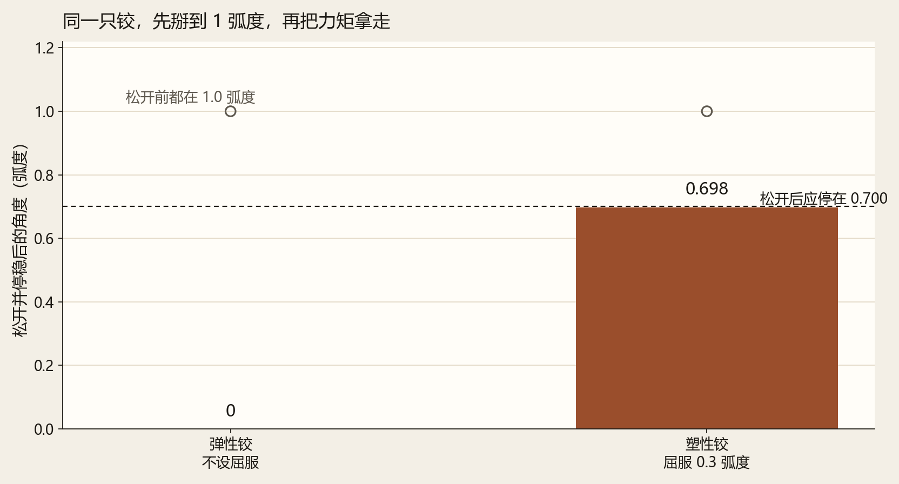

MuJoCo 4 · 2026.11.12
At small deflection, MuJoCo 4's elastic rod matches the textbook cantilever


In November 2026, Google DeepMind released MuJoCo 4.0. One sentence in the announcement can be checked with a ruler: the new one-dimensional elastic rod matches Euler-Bernoulli cantilever deflection to within 0.5%. I installed 4.0.1 on the machine that holds eight Radeon Pro W7900s and asked that sentence a question. The engine does the arithmetic on the CPU. The cards were in the chassis, and this question did not call them.
The first figure is the answer. The horizontal axis is how far the tip drops, as a fraction of the length. The vertical axis is the tip force required to hold that shape, divided by the force the linear theory asks for. At small deflection the ratio sits on 1.0000. At 6.8% of the length it falls to 0.980, and cutting the rod into finer pieces does not pull it back.
The question is a clamped round rod
MuJoCo 4 replaces the old cable plugin with a one-dimensional flex. The second moment of a circular section is the textbook one, πr⁴/4. Bending energy lives on a vertex between two edges, with stiffness equal to Young's modulus times that moment, divided by the sum of the two edge lengths. A real clamp means pinning the first two vertices to the world, so the first edge cannot rotate. Pin a single point and the rod swings around it. Beam theory has not started.
Linear theory says a tip force P drops the tip by PL³/(3EI). I did not wait for the dynamics to settle. A one-meter rod of one kilogram, lightly damped, has a period of more than a minute, and after that the tip still drifts. Statics is cleaner: place the rod on the curve the formula draws, call mj_inverse, read the tip force that holds the shape, and divide by P.
The radius is 5 mm, Young's modulus is 1 MPa, and the elastic length past the clamp is 1 m. From 15 segments to 31 and then to 63, the ratio does not move. The discrepancy is not the mesh.
Small deflection agrees, and large deflection is the formula leaving
When the tip drops 0.068% of the length, the holding force is 9.999979×10⁻⁷ N against a theory load of 10⁻⁶ N. The ratio is 1.0000, a relative difference of about two parts in a million. Seventeen vertices, thirty-three, and sixty-five all give that same number. The 0.5% band from the announcement is drawn on the figure. This point sits far closer to the center of the band than to its edge.
At 6.8% of the length the ratio is 0.9796. A finer mesh stays in that same neighborhood. The linear formula assumes the deflection is much smaller than the length, so slopes are small next to 1. At 6.8% that assumption is already paying its bill. The rod's stiffness did not change with the segment count.
The sentence can be said more tightly after that. On the side where linear theory applies, MuJoCo 4's round rod and the textbook are the same sentence, and the match is much tighter than the announced 0.5%. At large deflection, the linear formula is what leaves first.
Plasticity stops at the angle it should
MuJoCo 4 also gives joints ideal elastoplasticity. A hinge of stiffness 20 is bent to 1 radian, then the torque is removed. With no yield it returns to 0. With a yield of 0.3 radian it rests at 0.6975 radian, and the plastic reference stored in the state is 0.6975 as well. The elastic part gives back the yield, so the rest angle should be 0.700 radian. The difference is 0.36%. The bend that went past yield stays in the hinge. It does not sneak back to straight.
4.0.1, and the doors this check left closed
The install is 4.0.1 from 11 November, not 4.0.0 from five days earlier. In 4.0.0 the sparse Cholesky could merge rows with different descendants into one supernode and hand the Newton solver a wrong Hessian factor when the constraint Jacobian was sparse. 4.0.1 fixes that. The notes are at 4.0.1. The 0.5% sentence is in the MuJoCo 4 announcement.
The Python package is now three pieces. mujoco pulls in mujoco-core and mujoco-studio. The core depends only on numpy. Studio carries Filament and the browser viewing path. This check did not open Studio, and it did not run the penetration-free cloth contact. MuJoCo Warp is the GPU backend built with NVIDIA, and it was not part of the run. On a headless machine, the rod and the hinge are what can be asked cleanly.
At small deflection the rod matches the textbook. At large deflection, the linear formula is what stops matching first.